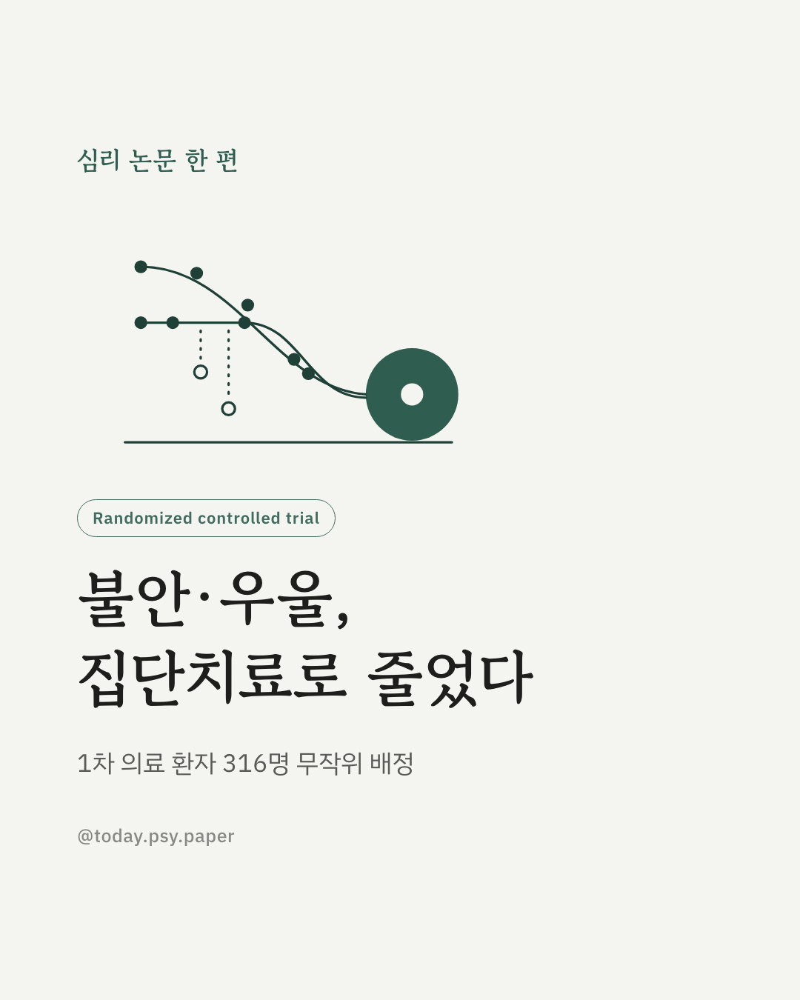
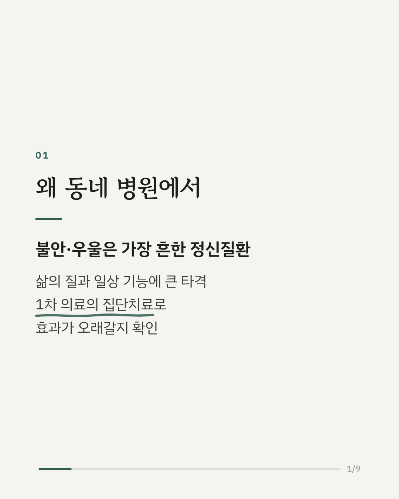
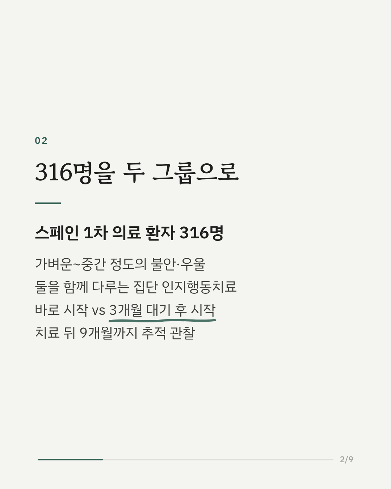
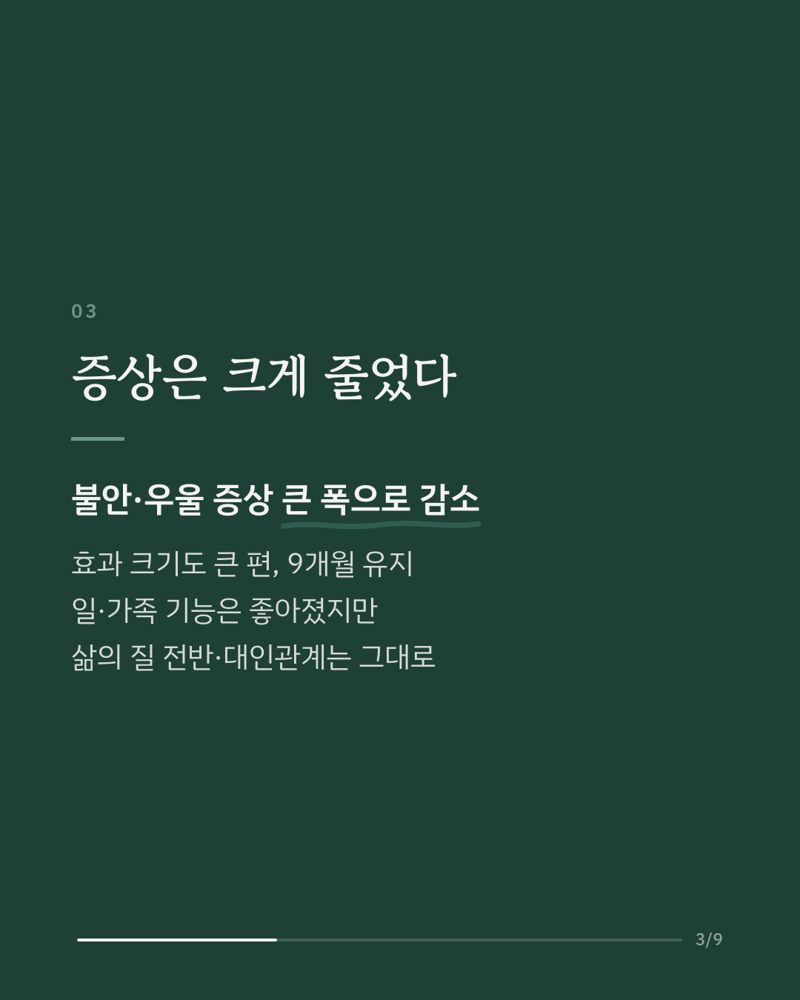
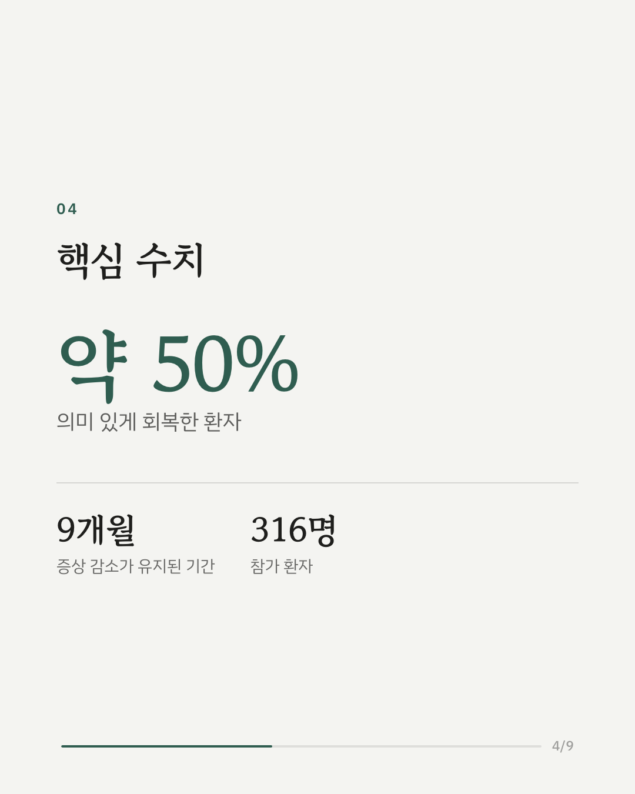
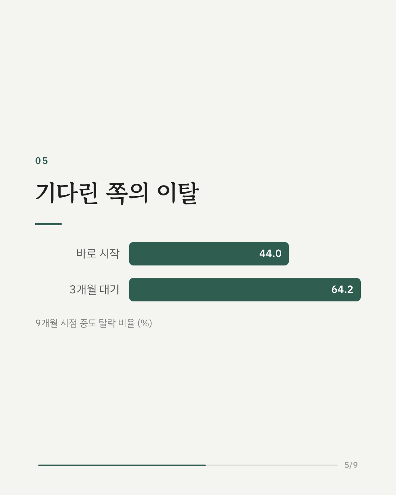
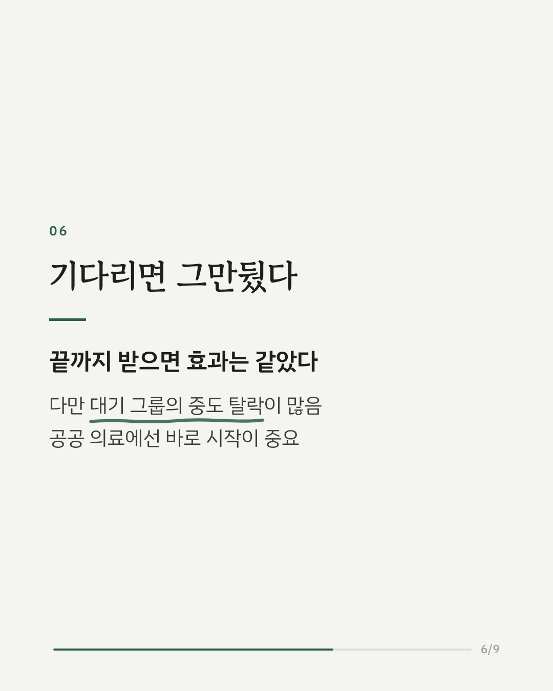
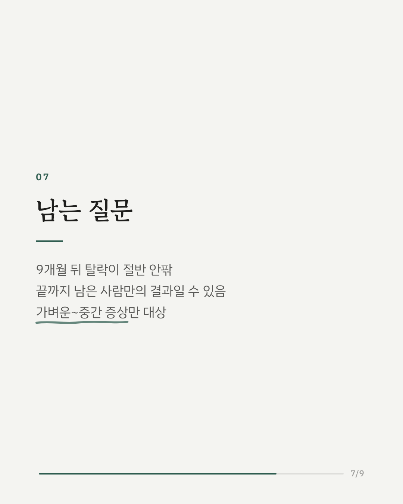
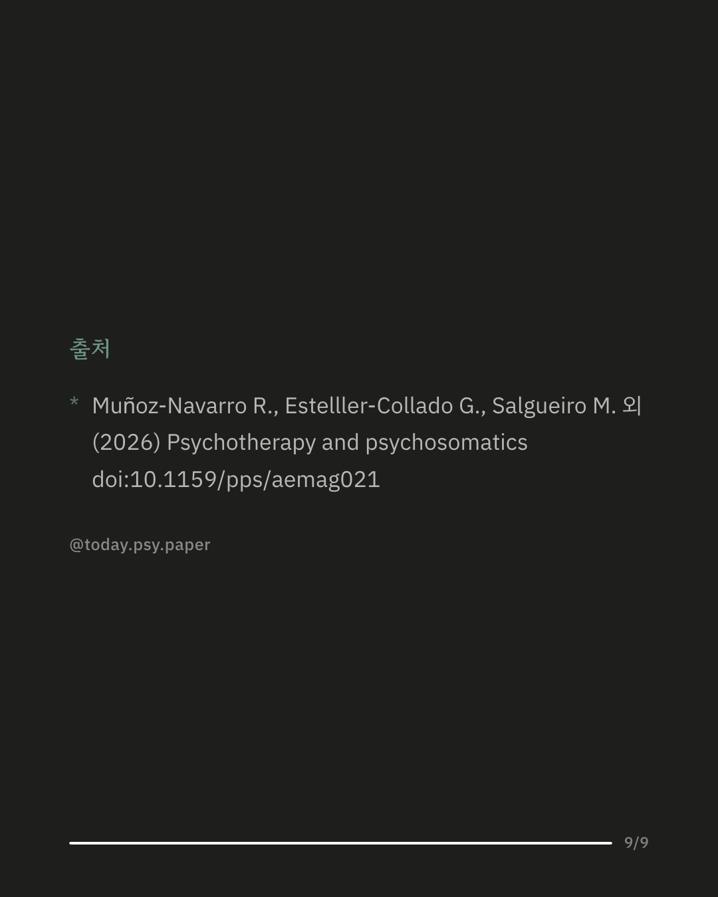

불안과 우울증은 가장 흔한 정신질환이지만, 전문 심리치료를 받기까지 오래 기다려야 하는 경우가 많습니다. 스페인 연구진은 1차 의료 기관에서 불안과 우울을 함께 다루는 집단 인지행동치료를 제공하고, 바로 시작한 그룹과 3개월 기다린 뒤 시작한 그룹을 비교했습니다. 가벼운~중간 정도 증상의 환자 316명을 9개월까지 추적 관찰한 결과, 불안·우울 증상은 큰 폭으로 줄었고 효과는 9개월 뒤에도 유지됐습니다. 약 절반이 의미 있는 수준으로 회복했고, 증상이 나빠진 경우는 드물었습니다. 일과 가족 생활의 기능은 좋아졌지만, 삶의 질 전반과 대인관계는 뚜렷이 달라지지 않았습니다. 끝까지 치료받은 사람만 보면 3개월을 기다려도 효과는 같았습니다. 다만 9개월 시점 중도 탈락은 기다린 그룹 64.2%, 바로 시작한 그룹 44.0%로 차이가 컸습니다. 연구진은 공공 의료에서 치료를 바로 시작하는 것이 환자를 붙잡는 데 중요하다고 봤습니다. 탈락이 많아, 끝까지 남은 사람의 결과가 실제보다 좋게 보였을 가능성은 남습니다. Psychotherapy and Psychosomatics (2026), 'Long-term effectiveness of transdiagnostic cognitive-behavioural therapy for anxiety and depression in primary care: the PsicAP-CV trial' DOI: 10.1159/pps/aemag021 #임상심리 #정신건강정보 #심리학연구 #논문리뷰 #인지행동치료 #불안장애 #우울증 #집단상담
python3 publish.py 42868096